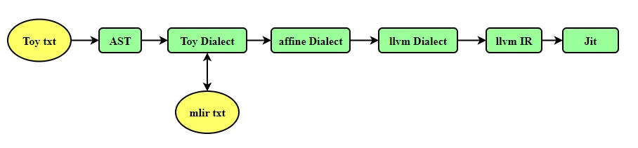
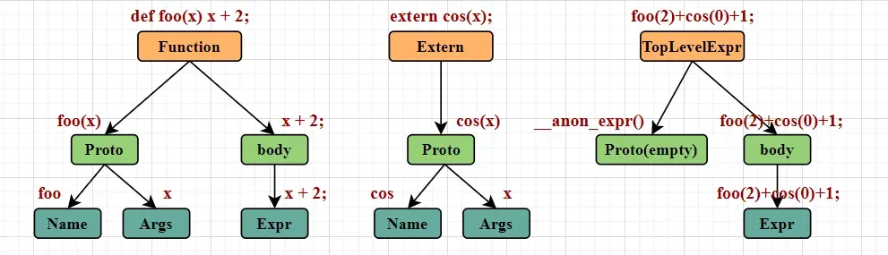
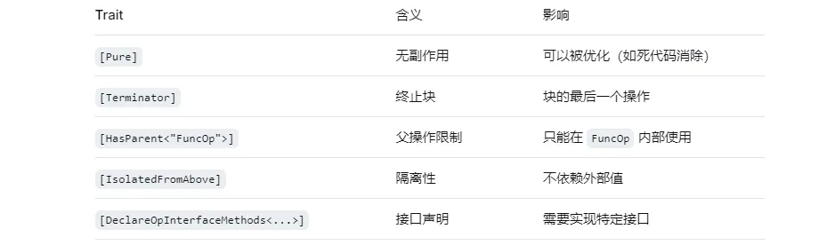

# 前言
现在开启 MLIR 学习系列。本章介绍 Toy 语言和 Toy Dialect 这一步骤的转换。当然，是从 Toy AST 到 Toy Dialect 这一过程得转换。从 Toy 文本语言到 AST 这个转换过程，需要编译原理的知识和非常麻烦的词法分析器，且这个过程与 MLIR 无关，所以该文章不会包含这个过程。
学习 MLIR 最好的方式还是照着官方教程来，但是只看 MLIR 官网教程，Ch1 到 Ch6，没有基础的话又让人学着有点吃力。所以本教程没有直接参照官网 Toy 教程，而是以 MLIR 工程的 toy 相关代码入手。欢迎参考。
相关链接： LLVM Project ，MLIR 官方文档，MLIR 官网教程，【编译器】使用 llvm 编译自定义语言【1】构建 AST 。
作为初学者，错误在所难免，还望不吝赐教。
# 基本简介
官网 Toy 教程 展示了如何将自定义语言 Toy 借助 MLIR 一步步编译为可执行机器码的过程。Toy 是一种简单的自定义语言，为了简便，其所有数据类型定义为 fp64 类型的 Tensor，支持 +/* 操作和 transpose 等有限的操作。
以下是整个编译降级的过程：
Toy txt -> Toy AST -> Toy Dialect -> Affine Dialect -> llvm Dialect -> llvm IR -> 机器码（通过 JIT 编译）

编译过程，下载 github llvm 工程，按照官网编译，值得一提的是，编译整个工具用时太久，我们重点关注 CH* 教程内容，在修改了教程中代码之后，可以只对该部分进行编译：
# 只编译 ch6 | |
ninja -j 4 toyc-ch6 |
第六节已经是较为完整的代码，第七节增加了一个复杂类型的支持。我们主要看第六节的代码。
一些执行指令：
# 读取 mlir 到 llvm dialect | |
/your/path/llvm-project/build/bin/toyc-ch6 /your/path/llvm-project/mlir/test/Examples/Toy/Ch5/affine-lowering.mlir -emit=mlir-llvm | |
# 读取 mlir 到 可执行文件 | |
/your/path/llvm-project/build/bin/toyc-ch6 /your/path/llvm-project/mlir/test/Examples/Toy/Ch5/affine-lowering.mlir -emit=jit | |
# 读取 toy 到 toy dialect | |
/your/path/llvm-project/build/bin/toyc-ch6 /your/path/llvm-project/mlir/test/Examples/Toy/Ch6/codegen.toy -emit=mlir | |
# 读取 toy 到 toy dialect opt | |
/your/path/llvm-project/build/bin/toyc-ch6 /your/path/llvm-project/mlir/test/Examples/Toy/Ch6/codegen.toy -emit=mlir -opt | |
# 读取 toy 到 affine dialect | |
/hyour/path/llvm-project/build/bin/toyc-ch6 /your/path/llvm-project/mlir/test/Examples/Toy/Ch6/codegen.toy -emit=mlir-affine | |
# 读取 toy 到 llvm dialect | |
/your/path/llvm-project/build/bin/toyc-ch6 /your/path/llvm-project/mlir/test/Examples/Toy/Ch6/codegen.toy -emit=mlir-llvm |
# AST 转 toy dialect
简单看一下入口函数。该函数用来解析命令行，完成对应的指令。指令需要输入 toy 文本或者 toy 文本转成的 mlir 文本 （MLIR 支持序列化和反序列化，所以 mlir txt 和 toy dialect 可以互相转换）。他们都会生成同样的 Toy Dialect。
int main(int argc, char **argv) { | |
// Register any command line options. | |
mlir::registerAsmPrinterCLOptions(); // 注册汇编打印选项 | |
mlir::registerMLIRContextCLOptions(); // 注册 MLIR 上下文选项 | |
mlir::registerPassManagerCLOptions(); // 注册 Pass 管理器选项 | |
cl::ParseCommandLineOptions(argc, argv, "toy compiler\n"); // 解析输入命令 | |
if (emitAction == Action::DumpAST) | |
return dumpAST(); | |
// 生成 抽象语法树 AST，并打印出来。 | |
// If we aren't dumping the AST, then we are compiling with/to MLIR. | |
mlir::DialectRegistry registry; | |
mlir::func::registerAllExtensions(registry); | |
mlir::LLVM::registerInlinerInterface(registry); | |
mlir::MLIRContext context(registry); | |
// Load our Dialect in this MLIR Context. | |
context.getOrLoadDialect<mlir::toy::ToyDialect>(); // 加载 自定义方言 | |
toy dialect，用到的其他方言延迟加载，即访问到对应方言的时候才加载 | |
mlir::OwningOpRef<mlir::ModuleOp> module; | |
if (int error = loadAndProcessMLIR(context, module)) //ast -> affine dialect -> llvm dialect 降级过程 | |
return error; | |
// If we aren't exporting to non-mlir, then we are done. | |
bool isOutputingMLIR = emitAction <= Action::DumpMLIRLLVM; | |
if (isOutputingMLIR) { | |
module->dump(); | |
return 0; | |
} | |
// Check to see if we are compiling to LLVM IR. | |
if (emitAction == Action::DumpLLVMIR) | |
return dumpLLVMIR(*module); // llvm dialect -> llvm IR | |
// Otherwise, we must be running the jit. | |
if (emitAction == Action::RunJIT) | |
return runJit(*module); //run 执行 jit | |
llvm::errs() << "No action specified (parsing only?), use -emit=<action>\n"; | |
return -1; | |
} |
我们不关注 Toy 文本到 AST 的转换过程，感兴趣的可以去看 MLIR TOY 教程的源码。其涉及到的是编译原理和较为复杂的词法分析器，相关知识也可以参考 llvm 教程中的万花筒语言 My First Language Frontend with LLVM 编译过程，以及博客【编译器】使用 llvm 编译自定义语言【1】构建 AST 等内容，其内容与当前 文本转 AST 类似，这里不再赘述。
我们着重关注 AST 转 toy dialect 的过程。
转换过程位于 mlir/examples/toy/Ch6/mlir/MLIRGen.cpp 文件中。
想要理解转换过程，还是先回顾一下 AST 抽象语法数的结构：在之前学习万花筒语言中，代码语言的顶层结构有三种，分别是 函数 Function ，外部函数调用 Extern 、顶层表达式 TopLevelExpr 。
Toy 语言有点类似于 C 这些常见的语言，最外层都是一些函数，比如 main () 和其他一些自定义函数，所以 AST 最外层是一些函数的集合。

AST 转 toy Dialect 代码： 输入 ModuleAST ，输出 mlir::ModuleOp 。
mlir::ModuleOp mlirGen(ModuleAST &moduleAST) { // 输入 AST | |
// We create an empty MLIR module and codegen functions one at a time and | |
// add them to the module. | |
theModule = mlir::ModuleOp::create(builder.getUnknownLoc()); | |
for (FunctionAST &f : moduleAST) // AST 是一系列 Function 的集合，包含 main 函数和其调用的函数，对这些函数构建 mlir | |
mlirGen(f); | |
// Verify the module after we have finished constructing it, this will check | |
// the structural properties of the IR and invoke any specific verifiers we | |
// have on the Toy operations. | |
if (failed(mlir::verify(theModule))) { | |
theModule.emitError("module verification error"); | |
return nullptr; | |
} | |
return theModule; // 构建完成 的 toy dialect | |
} |
mlirGen() 拥有多个重载函数，用来处理 函数、常量、返回、调用、表达式等，深度递归地构建 toy dialect。我们来看一下处理函数：
从上方地 AST 结构图中可以看到 Function 包含原型 Proto 和躯干 body 两部分，原型 Proto 包含函数名和若干参数，躯干 body 包含多个表达式。下方地代码和比较清晰， Function 的原型部分交给 mlirGen(*funcAST.getProto()) 去工作，躯干部分交给 mlirGen(*funcAST.getBody()) 去工作。将这两部分工作的结果构建成 mlir::toy::FuncOp function 。
/// Emit a new function and add it to the MLIR module. | |
mlir::toy::FuncOp mlirGen(FunctionAST &funcAST) { | |
// Create a scope in the symbol table to hold variable declarations. | |
ScopedHashTableScope<llvm::StringRef, mlir::Value> varScope(symbolTable); | |
// Create an MLIR function for the given prototype. | |
builder.setInsertionPointToEnd(theModule.getBody()); | |
mlir::toy::FuncOp function = mlirGen(*funcAST.getProto()); // 深度递归地构建 原型 部分 | |
if (!function) | |
return nullptr; | |
// Let's start the body of the function now! | |
mlir::Block &entryBlock = function.front(); | |
auto protoArgs = funcAST.getProto()->getArgs(); | |
// Declare all the function arguments in the symbol table. | |
for (const auto nameValue : | |
llvm::zip(protoArgs, entryBlock.getArguments())) { | |
if (failed(declare(std::get<0>(nameValue)->getName(), | |
std::get<1>(nameValue)))) | |
return nullptr; | |
} | |
// Set the insertion point in the builder to the beginning of the function | |
// body, it will be used throughout the codegen to create operations in this | |
// function. | |
builder.setInsertionPointToStart(&entryBlock); | |
// Emit the body of the function. | |
if (mlir::failed(mlirGen(*funcAST.getBody()))) { // 深度递归地构建 躯干 部分 | |
function.erase(); | |
return nullptr; | |
} | |
// Implicitly return void if no return statement was emitted. | |
// FIXME: we may fix the parser instead to always return the last expression | |
// (this would possibly help the REPL case later) | |
ReturnOp returnOp; | |
if (!entryBlock.empty()) | |
returnOp = dyn_cast<ReturnOp>(entryBlock.back()); | |
if (!returnOp) { | |
ReturnOp::create(builder, loc(funcAST.getProto()->loc())); | |
} else if (returnOp.hasOperand()) { | |
// Otherwise, if this return operation has an operand then add a result to | |
// the function. | |
function.setType(builder.getFunctionType( | |
function.getFunctionType().getInputs(), getType(VarType{}))); | |
} | |
// If this function isn't main, then set the visibility to private. | |
if (funcAST.getProto()->getName() != "main") | |
function.setPrivate(); | |
return function; | |
} |
这些深度递归调用，最终会归根到最基本的表达式。比如 常量 Expr，Add Expr 等。比如递归到下面的变量表达式，就不会再往下递归了。
/// This is a reference to a variable in an expression. The variable is | |
/// expected to have been declared and so should have a value in the symbol | |
/// table, otherwise emit an error and return nullptr. | |
mlir::Value mlirGen(VariableExprAST &expr) { // 递归到了底层表达式 | |
if (auto variable = symbolTable.lookup(expr.getName())) | |
return variable; | |
emitError(loc(expr.loc()), "error: unknown variable '") | |
<< expr.getName() << "'"; | |
return nullptr; | |
} |
# TableGen 和 Toy Dialect 定义
Toy Dialect 方言是自定义方言，一般通过编写 td 文件，然后通过 TableGen 工具生成对应的 CPP 代码。
TableGen 是 LLVM/MLIR 生态中的 “代码生成器”，支持我们用声明式的语言写 “规则”，然后自动生成大量重复的 C++ 代码。
td 文件 位于 mlir/examples/toy/Ch6/include/toy/Ops.td
方言 Dialect 定义包含哪些部分：
ToyOps.td | |
├── 头文件保护 (#ifndef TOY_OPS) | |
├── 导入依赖 (include) | |
├── 方言定义 (Toy_Dialect) | |
├── 基类定义 (Toy_Op) | |
└── 操作定义 (ConstantOp, AddOp, FuncOp, ...) |
首先，定义一种方言：
// Provide a definition of the 'toy' dialect in the ODS framework so that we | |
// can define our operations. | |
def Toy_Dialect : Dialect { // 方言名称为 toy | |
let name = "toy"; | |
let cppNamespace = "::mlir::toy"; | |
} |
之后定义操作的基类：
// Base class for toy dialect operations. This operation inherits from the base | |
// `Op` class in OpBase.td, and provides: | |
// * The parent dialect of the operation. | |
// * The mnemonic for the operation, or the name without the dialect prefix. | |
// * A list of traits for the operation. | |
class Toy_Op<string mnemonic, list<Trait> traits = []> : | |
// 有名称 mnemonic 和 traits 特性列表两个参数，分别指明自己的名称和特性 | |
Op<Toy_Dialect, mnemonic, traits>; // |
名称，比如 ConstantOp 指定名称 为 "constant"， 则其在 MLIR 中的完整名称变成 "toy.constant"。
特性，比如 def ConstantOp : Toy_Op<"constant", [Pure]>
常见的特性 ：

之后定义具体操作，MLIR 中定义一个 Operation，你需要：
- a. 定义一个 C++ 类
- b. 实现构造方法（Builder）
- c. 实现访问器（Getter/Setter）
- d. 实现解析 / 打印方法（Parser/Printer）
- e. 实现验证方法（Verifier）
- f. 实现接口方法（如形状推断）
td 文件中 ConstantOp 的定义：
// We define a toy operation by inheriting from our base 'Toy_Op' class above. | |
// Here we provide the mnemonic and a list of traits for the operation. The | |
// constant operation is marked as 'Pure' as it is a pure operation | |
// and may be removed if dead. | |
def ConstantOp : Toy_Op<"constant", [Pure]> { | |
// Provide a summary and description for this operation. This can be used to | |
// auto-generate documentation of the operations within our dialect. | |
let summary = "constant"; | |
let description = [{ | |
Constant operation turns a literal into an SSA value. The data is attached | |
to the operation as an attribute. For example: | |
```mlir | |
%0 = toy.constant dense<[[1.0, 2.0, 3.0], [4.0, 5.0, 6.0]]> | |
: tensor<2x3xf64> | |
``` | |
}]; | |
// The constant operation takes an attribute as the only input. | |
let arguments = (ins F64ElementsAttr:$value); // 声明输入，ins 表示输入，F64ElementsAttr 表示类型，$value 表示名称 | |
// The constant operation returns a single value of TensorType. | |
let results = (outs F64Tensor); | |
// 声明输出， outs 表示输出， F64Tensor 表示类型。ConstantOp 产生一个 F64Tensor 类型的值 | |
// Indicate that the operation has a custom parser and printer method. | |
let hasCustomAssemblyFormat = 1; | |
// Add custom build methods for the constant operation. These method populates | |
// the `state` that MLIR uses to create operations, i.e. these are used when | |
// using `ConstantOp::create(builder, ...)`. | |
let builders = [ | |
// Build a constant with a given constant tensor value. | |
OpBuilder<(ins "DenseElementsAttr":$value), [{ | |
build($_builder, $_state, value.getType(), value); | |
}]>, | |
// Build a constant with a given constant floating-point value. | |
OpBuilder<(ins "double":$value)> | |
]; | |
// Indicate that additional verification for this operation is necessary. | |
let hasVerifier = 1; | |
} |
我发现 td 文件的定义生成的 inc 代码还是比较复杂的。大家可以精简一下 td 文件的内容，然后通过以下指令，生成新的 inc 文件，将生成内容和 td 定义对照一下。
/your/path/llvm-project/build/bin/mlir-tblgen -gen-op-decls \ | |
-I /your/path/llvm-project/mlir/include \ | |
-I /your/path/llvm-project/build/build/tools/mlir/include \ | |
/your/path/llvm-project/mytest/Ops.td \ | |
-o ./MyGeneratedOps.h.inc |
我觉得初步学习的话，只需要知道为什么这么定义，有什么功能就行了：
//td 定义 | |
def ConstantOp : Toy_Op<"constant", [Pure]> | |
// 会生成类似的代码 | |
class ConstantOp : public Op<...> { ... }; // 定义该操作 | |
static StringRef getOperationName() { return "toy.constant"; } // 获取该操作的名字 | |
//td 定义 | |
let arguments = (ins F64ElementsAttr:$value); | |
// 会生成类似的代码 | |
DenseElementsAttr getValue(); // 获取输入 | |
void setValue(DenseElementsAttr newValue); // 设置输入 | |
//td 定义 | |
let results = (outs F64Tensor); | |
// 会生成类似的代码 | |
Type getType(); | |
void setType(Type newType); |
该 ConstantOp 节点只有一个输入和一个输出，所以声明输入的时候 let arguments = (ins F64ElementsAttr:$value); 只有一个输入，类型为 “F64 的密集张量常量”。只有一个输出 let results = (outs F64Tensor); 输出类型是 F64Tensor 。
该 ConstantOp 定义了两个 builder，用来帮助构造该类，其中第二个 OpBuilder<(ins "double":$value)> ，生成的 C++ 相关代码如下：
OpBuilder<(ins "double":$value)> | |
// OpBuilder<(ins "double":$value)> 生成的 | |
static void build(::mlir::OpBuilder &odsBuilder,::mlir::OperationState &odsState, double value); // 定义生成的 build | |
static ConstantOp create(::mlir::OpBuilder &builder, ::mlir::Location location, double value); | |
//create 调用 build | |
static ConstantOp create(::mlir::ImplicitLocOpBuilder &builder, double value); | |
// 位于 Dialect.cpp | |
/// Build a constant operation. | |
/// The builder is passed as an argument, so is the state that this method is | |
/// expected to fill in order to build the operation. | |
void ConstantOp::build(mlir::OpBuilder &builder, mlir::OperationState &state, | |
double value) { | |
auto dataType = RankedTensorType::get({}, builder.getF64Type()); | |
auto dataAttribute = DenseElementsAttr::get(dataType, value); | |
ConstantOp::build(builder, state, dataType, dataAttribute); | |
} |
build 是 ODS 直接生成的，是最底层、最通用的创建方式。它不直接返回 ConstantOp，而是将属性填入 odsState 中。用户调用: builder.create<ConstantOp>(loc, 42.0) ，也就是里面的 create 函数，create 函数会调用 build。
例如，你能在 MLIRGen.cpp 文件中找到 AST 转 toy dialect 的函数中调用 ConstantOp::create(builder, loc(num.loc()), num.getValue());
虽然自动生成了 build 函数，但是这个函数的输入 Double 不是一个 MLIR 属性，它只是一个 C++ 基本类型。MLIR 不知道如何将一个 double 存储到 OperationState 的 attributes 中。你必须手写一段代码来 “包装” 它，所以你能在 Dialect.cpp 中找到自定义的函数定义。也在上方代码中。
td 定义中要有个 hasCustomAssemblyFormat 字段，表明需要自定义打印输出方法。该方法由开发者在 CPP 文件中自己定义。同样校验方法也需要自己定义。
// Indicate that the operation has a custom parser and printer method. | |
let hasCustomAssemblyFormat = 1; | |
// Indicate that additional verification for this operation is necessary. | |
let hasVerifier = 1; |
然后你能在 Dialect.cpp 中找到自定义的输出方法和自定义的验证方法：
/// The 'OpAsmPrinter' class is a stream that allows for formatting | |
/// strings, attributes, operands, types, etc. | |
void ConstantOp::print(mlir::OpAsmPrinter &printer) { | |
printer << " "; | |
printer.printOptionalAttrDict((*this)->getAttrs(), /*elidedAttrs=*/{"value"}); | |
printer << getValue(); | |
} | |
/// Verifier for the constant operation. This corresponds to the | |
/// `let hasVerifier = 1` in the op definition. | |
llvm::LogicalResult ConstantOp::verify() { | |
// If the return type of the constant is not an unranked tensor, the shape | |
// must match the shape of the attribute holding the data. | |
auto resultType = | |
llvm::dyn_cast<mlir::RankedTensorType>(getResult().getType()); | |
if (!resultType) | |
return success(); | |
// Check that the rank of the attribute type matches the rank of the constant | |
// result type. | |
auto attrType = llvm::cast<mlir::RankedTensorType>(getValue().getType()); | |
if (attrType.getRank() != resultType.getRank()) { | |
return emitOpError("return type must match the one of the attached value " | |
"attribute: ") | |
<< attrType.getRank() << " != " << resultType.getRank(); | |
} | |
// Check that each of the dimensions match between the two types. | |
for (int dim = 0, dimE = attrType.getRank(); dim < dimE; ++dim) { | |
if (attrType.getShape()[dim] != resultType.getShape()[dim]) { | |
return emitOpError( | |
"return type shape mismatches its attribute at dimension ") | |
<< dim << ": " << attrType.getShape()[dim] | |
<< " != " << resultType.getShape()[dim]; | |
} | |
} | |
return mlir::success(); | |
} |
以上是 td 及其生成文件的部分内容，总结来说，该 td 文件主要完成了以下内容:
Toy_Dialect // 定义一个方言 | |
Toy_Op // 一个 base OP | |
ConstantOp AddOp CastOp FuncOp // 定义一系列操作 | |
GenericCallOp MulOp PrintOp ReshapeOp | |
ReturnOp TransposeOp |
这些操作构成了一套 “最小完备集”。每个操作的详细定义可以参考 td 文件。
# 后记
人的出场顺序真的很重要，很多人如果换一个时间认识，换一个时间共处，一切都将是不一样的场景，不一样的结局。所以，人生有无限种可能，我的人生，是现在这一种。感谢大家恰到好处的出现，组成我最好的一种可能。 |
本博客目前以及可预期的将来都不会支持评论功能。各位大侠如若有指教和问题，可以在我的 github 项目 或随便一个项目下提出 issue，并指明哪一篇博客，看到一定及时回复！